News Archive, 2007
Professor Nanji Speaks on Pluralism and its Contents
December 2007
The Director of the Institute of Ismaili Studies (IIS), Professor Azim Nanji, spoke on ‘Pluralism and its contents’ at a seminar on 23 November 2007 at Aga Khan University’s Institute for the Study of Muslim Civilisations (AKU-ISMC). The seminar was the last in the series ‘Possibility of Pluralism’, which discussed pluralism and its specific relevance to Muslim societies. More
December 2007
The Director of the Institute of Ismaili Studies (IIS), Professor Azim Nanji, spoke on ‘Pluralism and its contents’ at a seminar on 23 November 2007 at Aga Khan University’s Institute for the Study of Muslim Civilisations (AKU-ISMC). The seminar was the last in the series ‘Possibility of Pluralism’, which discussed pluralism and its specific relevance to Muslim societies. More
IIS participates in MESA 2007
December 2007
The Institute of Ismaili Studies participated in the Middle East Studies Association (MESA) conference held in Palais des Congrés de Montréal (Canada) from 17-20 November. In addition to over 200 panels on a variety of topics related to history, politics, art and society, the conference featured book and art exhibitions as well as a film festival. More
December 2007
The Institute of Ismaili Studies participated in the Middle East Studies Association (MESA) conference held in Palais des Congrés de Montréal (Canada) from 17-20 November. In addition to over 200 panels on a variety of topics related to history, politics, art and society, the conference featured book and art exhibitions as well as a film festival. More
 Professor Tavakoli-Targhi Speaks on Cultural Modernity in Iran
Professor Tavakoli-Targhi Speaks on Cultural Modernity in Iran December 2007
'Everyday Modern: Cultural Politics in Iran' was the subject of Prof. Mohamad Tavakoli-Targhi's lecture on 6 December 2007 in the series on 'Contemporary Islam(s) and Muslims'. Held at The Institute of Ismaili Studies, this third lecture in the series traced more than one hundred years of the emergence of private and public modernity in Iran. More
Launch of the first IIS publication translated into Gujarati
December 2007
Dr. Farhad Daftary, Associate Director and Head of the Department of Academic Research and Publications at the IIS, was recently in Mumbai, India, for the launch of the Gujarati translation of his book A Short History of the Ismailis. The translation, titled, Ismailio-no Tunk Ittihaas, was done by Jehangir Alibhai Merchant and Sultanali Muhammad, and published by N.M. Thakkar Publishers, Mumbai. More
December 2007
Dr. Farhad Daftary, Associate Director and Head of the Department of Academic Research and Publications at the IIS, was recently in Mumbai, India, for the launch of the Gujarati translation of his book A Short History of the Ismailis. The translation, titled, Ismailio-no Tunk Ittihaas, was done by Jehangir Alibhai Merchant and Sultanali Muhammad, and published by N.M. Thakkar Publishers, Mumbai. More
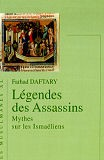Book launch: French translation of The Assassin Legends
November 2007
The launch of the French translation of the book The Assassin Legends: Myths of the Ismailis took place in Paris, on 22 September. The author, Dr Farhad Daftary, Associate Director and Head of the Department of Academic Research and Publications, who has thus far authored 8 books, spoke about the different mediaeval tales that constitute the legends concerning Syrian and Persian Ismailis. More
November 2007
The launch of the French translation of the book The Assassin Legends: Myths of the Ismailis took place in Paris, on 22 September. The author, Dr Farhad Daftary, Associate Director and Head of the Department of Academic Research and Publications, who has thus far authored 8 books, spoke about the different mediaeval tales that constitute the legends concerning Syrian and Persian Ismailis. More
 Second lecture in the 'Contemporary Islams and Muslims' series: “Rumi to Adonis: The Conference of the Bards”
Second lecture in the 'Contemporary Islams and Muslims' series: “Rumi to Adonis: The Conference of the Bards” November 2007
Raficq Abdulla, MBE, a writer, public speaker and broadcaster, spoke on the power of poetry to create an imagery of social critique as well as touch mystical chords in his talk at The Institute of Ismaili Studies on 15th November 2007. 'Rumi to Adonis: The Conference of the Bards' was the second in the IIS’ lecture series on 'Contemporary Islams and Muslims', which highlights key aspects of the Muslim encounter with modernity. More
‘Contemporary Islam(s) & Muslims’ Seminar Series Launched
November 2007
This new lecture series, entitled ‘Contemporary Islams & Muslims’ (CIM), launched on 18th October 2007 by The Institute of Ismaili Studies, will engage with a broad range of Muslim encounters with modernity. Leading scholars will speak to themes from human rights, pluralism and identity, to the arts, culture and spirituality. More
November 2007
This new lecture series, entitled ‘Contemporary Islams & Muslims’ (CIM), launched on 18th October 2007 by The Institute of Ismaili Studies, will engage with a broad range of Muslim encounters with modernity. Leading scholars will speak to themes from human rights, pluralism and identity, to the arts, culture and spirituality. More
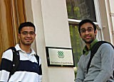IIS Launches Secondary Teacher Education Programme
October 2007
The Institute’s Department of Graduate Studies welcomed its first cohort of students to the newly established Secondary Teacher Education Programme (STEP) this month. The STEP is a large-scale initiative involving The Institute of Ismaili Studies, the Institute of Education (IOE) at the University of London, and the Ismaili Tariqah and Religious Education Boards (ITREBs) of five participating countries. More
October 2007
The Institute’s Department of Graduate Studies welcomed its first cohort of students to the newly established Secondary Teacher Education Programme (STEP) this month. The STEP is a large-scale initiative involving The Institute of Ismaili Studies, the Institute of Education (IOE) at the University of London, and the Ismaili Tariqah and Religious Education Boards (ITREBs) of five participating countries. More
 IIS Holds Summer Programme on Islam at McGill University
IIS Holds Summer Programme on Islam at McGill University October 2007
Now in its 6th year, the IIS Summer Programme on Islam was held in Montreal, Canada, for the second consecutive summer, from 11-19 August at McGill University. Thirty-one participants from seven countries contributed to the richness and diversity of the programme’s sessions and seminars. More
 IIS-sponsored Book in Russian on the Poetry of Nasir Khusraw
IIS-sponsored Book in Russian on the Poetry of Nasir Khusraw October 2007
A new book in Russian entitled Poetry as a Means of Preaching: The Concept of “the Good Word” in Nasir Khusraw's poetry was published by Natalis Press, Moscow in September, 2007. This work, by Leila R Dodykhudoeva and Marina L Reisner, was commissioned by the IIS and Hakim Elnazarov, the Institute’s Central Asian Studies Project Coordinator, was one of the book’s co-editors. More
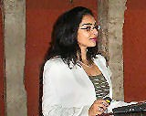IIS Student Presents Paper at 13th International Congress of Turkish Art
October 2007
Sabrina A. Bandali, an IIS student, presented a paper at the 13th International Congress of Turkish Art in Budapest in September, 2007. The conference theme was the mutual influences of Turkish and European art, and also focused on collections of Turkish art held by European museums. More
October 2007
Sabrina A. Bandali, an IIS student, presented a paper at the 13th International Congress of Turkish Art in Budapest in September, 2007. The conference theme was the mutual influences of Turkish and European art, and also focused on collections of Turkish art held by European museums. More
 IIS Alumni Reunion
IIS Alumni Reunion September 2007
The IIS hosted its second alumni reunion in London from 8th-10th September 2007. Nearly 100 alumni traveled from across the globe to participate in the three-day event which provided an opportunity for all IIS alumni to come together, learn from their unique experiences, and give shape to the way in which they interact within and outside the community. More
 IIS Honours Class of 2007 Graduates
IIS Honours Class of 2007 Graduates September 2007
Eight members of the Class of 2007 were honoured at a graduation ceremony at the Ismaili Centre in London on the afternoon of 10 September 2007. Prince Rahim Aga Khan was the Chief Guest and delivered the commencement address at the graduation. In attendance were over 250 guests, including Prince Hussain Aga Khan, Princess Khaliya Aga Khan, governors, faculty, staff and students of the IIS, senior leaders of the Ismaili Community in the UK as well as donors and supporters of the IIS. More
 Achievements of IIS Preparatory Programme Graduates
Achievements of IIS Preparatory Programme Graduates August 2007
In conjunction with the Syrian Ismaili Institutions and the British Council, the IIS’ Department of Graduate Studies offers the Syrian Preparatory Programme (SyPP) in Damascus, Syria. Its purpose is to foster intellectual development and leadership skills in its students. More
IIS Announces 2007 PhD Scholarship Awards
August 2007
Since 1997, The Institute of Ismaili Studies has made available PhD Scholarships for suitable candidates whose work complements the research perspectives and mandate of the IIS. This year’s recipients are Zouhal Avzalchoeva, Rafiq Rahim Ajani, Sabrina Datoo and Aly Kassam-Remtulla. More
August 2007
Since 1997, The Institute of Ismaili Studies has made available PhD Scholarships for suitable candidates whose work complements the research perspectives and mandate of the IIS. This year’s recipients are Zouhal Avzalchoeva, Rafiq Rahim Ajani, Sabrina Datoo and Aly Kassam-Remtulla. More
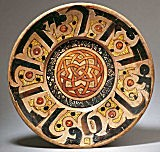IIS Staff in the Media on New 'Spirit & Life' Exhibition
July 2007
Professor Azim Nanji, Director of the IIS, and Mr Alnoor Merchant, IIS’ Senior Librarian and Keeper of the Ismaili Collections, talked about Spirit & Life, a new exhibition of rare Islamic art and manuscripts from the future Aga Khan Museum Collection, to the British media. The exhibition, which includes many items never before displayed in the UK, opened on 14 July at the Ismaili Centre in London, and will run until 31 August 2007. More
July 2007
Professor Azim Nanji, Director of the IIS, and Mr Alnoor Merchant, IIS’ Senior Librarian and Keeper of the Ismaili Collections, talked about Spirit & Life, a new exhibition of rare Islamic art and manuscripts from the future Aga Khan Museum Collection, to the British media. The exhibition, which includes many items never before displayed in the UK, opened on 14 July at the Ismaili Centre in London, and will run until 31 August 2007. More
 IIS Participates in Middle East Libraries Conference
IIS Participates in Middle East Libraries Conference July 2007
Wendy Robinson, a Research Assistant at IIS’ Department of Academic Research and Publications (DARP), gave a presentation at the MELCOM International (Middle East Libraries Committee) conference in Sarajevo last month on the forthcoming publication of Encyclopaedia Islamica. Ms Robinson gave the talk to the conference of librarians working in the field of Middle Eastern studies at their annual meeting, held for the first time in the capital of Bosnia-Herzegovina. More
 IIS Alumnus Leads Development of Digital Library about Africa
IIS Alumnus Leads Development of Digital Library about Africa July 2007
Rahim S. Rajan, an alumnus of The Institute of Ismaili Studies’ Graduate Programme in Islamic Studies and Humanities, gave a detailed overview and demonstration of the Aluka initiative on 6th June to IIS faculty, staff and students. More
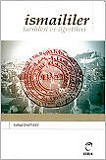'The Ismailis: Their History and Doctrines' Translated into Turkish
June 2007
Dr Farhad Daftary’s The Ismailis: Their History and Doctrines has just been published in a Turkish translation by Erdal Toprak, Ismaililer: tarihleri ve öğretileri. First published in English in 1990, this authoritative and groundbreaking work brought together the scattered findings of modern scholarship and extensive primary and secondary source materials on the Ismailis in one comprehensive volume... More
June 2007
Dr Farhad Daftary’s The Ismailis: Their History and Doctrines has just been published in a Turkish translation by Erdal Toprak, Ismaililer: tarihleri ve öğretileri. First published in English in 1990, this authoritative and groundbreaking work brought together the scattered findings of modern scholarship and extensive primary and secondary source materials on the Ismailis in one comprehensive volume... More
IIS Receives the Hamdani Collection of Rare Manuscripts
June 2007
Professor Abbas Hamdani of Milwaukee (USA) gifted a collection of rare and important manuscripts to The Institute of Ismaili Studies. The Sayyidi Muhammad ‘Ali Hamdani Collection of Ismaili and other manuscripts, in the Hamdani family for several generations, is well-known among scholars in the field of Shi‘i and Ismaili studies. More
June 2007
Professor Abbas Hamdani of Milwaukee (USA) gifted a collection of rare and important manuscripts to The Institute of Ismaili Studies. The Sayyidi Muhammad ‘Ali Hamdani Collection of Ismaili and other manuscripts, in the Hamdani family for several generations, is well-known among scholars in the field of Shi‘i and Ismaili studies. More
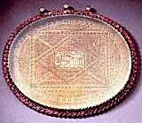IIS Director Speaks at Parma Symposium
June 2007
Professor Azim Nanji, Director of the IIS, gave a paper to the Parma Symposium (15-17 May, 2007), tracing the historical framework of exchange and dialogue among institutions of learning during the medieval period. This Symposium, entitled "Islam e Occidente: Dialogo Tra Culture" (Islam and the West: An Intercultural Dialogue), included presentations from representatives of many distinguished institutions. More
June 2007
Professor Azim Nanji, Director of the IIS, gave a paper to the Parma Symposium (15-17 May, 2007), tracing the historical framework of exchange and dialogue among institutions of learning during the medieval period. This Symposium, entitled "Islam e Occidente: Dialogo Tra Culture" (Islam and the West: An Intercultural Dialogue), included presentations from representatives of many distinguished institutions. More
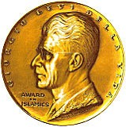Professor Wilferd Madelung Awarded Prestigious Giorgio Levi Della Vida Prize
June 2007
Professor Wilferd Madelung, Senior Research Fellow at the IIS, was awarded the Eighteenth Giorgio Levi Della Vida Award at the University of California, Los Angeles on May 10, 2007. The award honours his life-long commitment to scholarship, education and professional service in the field of Islamic Studies. More
June 2007
Professor Wilferd Madelung, Senior Research Fellow at the IIS, was awarded the Eighteenth Giorgio Levi Della Vida Award at the University of California, Los Angeles on May 10, 2007. The award honours his life-long commitment to scholarship, education and professional service in the field of Islamic Studies. More
 IIS Director Speaks on Combating Religious Intolerance
IIS Director Speaks on Combating Religious Intolerance May 2007
Professor Azim Nanji, Director of the IIS, delivered a talk, entitled Combating Religious Intolerance: A Perspective From Muslim Contexts, to the World Affairs Group of the Bath Royal Literary & Scientific Institution (BRLSI) on 19th March 2007. He cited examples of tolerance and intolerance from different religious traditions, both historical and in the present-day context. More
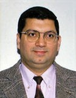Dr. Najam Abbas speaks on the impact of socio-economic transition on Pamiri youth
April 2007
On 8th March, Dr. Najam Abbas, a Research Associate at The Institute of Ismaili Studies, gave a talk entitled "When Transition Visits Mountains: Education, Work and Careers in South eastern Tajikistan" at the Centre of Contemporary Central Asia and the Caucasus in the School of Oriental and AfricanStudies (SOAS). Dr Abbas had been invited by the Centre’s Chair, Dr. Bhavna Dave, as part of the Centre's regular Seminar Programme. More
April 2007
On 8th March, Dr. Najam Abbas, a Research Associate at The Institute of Ismaili Studies, gave a talk entitled "When Transition Visits Mountains: Education, Work and Careers in South eastern Tajikistan" at the Centre of Contemporary Central Asia and the Caucasus in the School of Oriental and AfricanStudies (SOAS). Dr Abbas had been invited by the Centre’s Chair, Dr. Bhavna Dave, as part of the Centre's regular Seminar Programme. More
 Syrian Preparatory Programme Graduate Receives Prestigious Scholarship
Syrian Preparatory Programme Graduate Receives Prestigious Scholarship April 2007
Mr. Ezzaldin Ibrahim, who graduated from the Syrian Preparatory Programme (SyPP) in January 2007, has been awarded a Chevening scholarship by the British Government. These scholarships, funded by the Foreign and Commonwealth Office, enable overseas students to undertake post-graduate study in the United Kingdom for a year. More
 IIS Alumni Internship Programme
IIS Alumni Internship Programme March 2007
In 2006, the IIS launched the Alumni Internship Programme, a new initiative aimed at creating professional development opportunities for IIS alumni. Internship positions were established within Imamat and Jamati institutions globally, in a range of disciplines including education, journalism, research, human resources and religious education. More
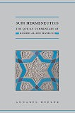New IIS Publication on Sufi Qur’anic Hermeneutics
March 2007
The Institute has published Dr Annabel Keeler’s monograph, Sufi Hermeneutics: The Qur’an Commentary of Rashid al-Din Maybudi, which examines the Sufi approach to Qur’anic interpretation, as exemplified in a twelfth-century Persian Qur’an commentary, Maybudi’s Kashf al-Asrar (Unveiling of Mysteries). This is the first major study in a Western language of this influential figure in the history of Qur’an commentaries and Persian literature. More
March 2007
The Institute has published Dr Annabel Keeler’s monograph, Sufi Hermeneutics: The Qur’an Commentary of Rashid al-Din Maybudi, which examines the Sufi approach to Qur’anic interpretation, as exemplified in a twelfth-century Persian Qur’an commentary, Maybudi’s Kashf al-Asrar (Unveiling of Mysteries). This is the first major study in a Western language of this influential figure in the history of Qur’an commentaries and Persian literature. More
 New IIS publication focuses on al-Qadi al-Nu‘man’s literary contributions
New IIS publication focuses on al-Qadi al-Nu‘man’s literary contributions March 2007
Between Revolution and State: The Path to Fatimid Statehood by Sumaiya Hamdani examines the historical and juristic works of al-Qadi al-Nu‘man, an Ismaili Muslim theologian and jurist of the early Fatimid period. It provides insights into al-Nu‘man’s writing within the context of the transition of the Shi‘i Ismaili movement to a caliphate in the first few decades of the tenth century. More
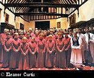IIS Collaborates in Conference on Music of the Abrahamic Faiths
February 2007
Windsor Castle was the venue of an unusual conference entitled, ‘Sacred Voices’: Convergence and Contrast in the Music of the Abrahamic Faiths, which was co-sponsored by St George’s House, The Institute of Ismaili Studies, The Festival of Muslim Culture, The Jewish Music Institute (SOAS) and The Three Faiths Forum. The Conference, held on 30 January and 1 February, 2007, was attended by scholars and musicians from Europe, North America, North Africa and Asia. More
February 2007
Windsor Castle was the venue of an unusual conference entitled, ‘Sacred Voices’: Convergence and Contrast in the Music of the Abrahamic Faiths, which was co-sponsored by St George’s House, The Institute of Ismaili Studies, The Festival of Muslim Culture, The Jewish Music Institute (SOAS) and The Three Faiths Forum. The Conference, held on 30 January and 1 February, 2007, was attended by scholars and musicians from Europe, North America, North Africa and Asia. More
IIS Graduate facilitates National Strategic Plan for Education in Afghanistan
February 2007
Yahia Baiza, an alumnus of the IIS Graduate Programme in Islamic Studies and Humanities (GPISH), has been appointed by The International Institute for Educational Planning (IIEP) of UNESCO as their representative at The Afghan Ministry of Education. As the UNESCO-IIEP National Coordinator, Yahia will assist in supervising the formulation and implementation of the National Strategic Plan for Education in Afghanistan. More
February 2007
Yahia Baiza, an alumnus of the IIS Graduate Programme in Islamic Studies and Humanities (GPISH), has been appointed by The International Institute for Educational Planning (IIEP) of UNESCO as their representative at The Afghan Ministry of Education. As the UNESCO-IIEP National Coordinator, Yahia will assist in supervising the formulation and implementation of the National Strategic Plan for Education in Afghanistan. More
 New IIS Publication on Farid al-Din ‘Attar
New IIS Publication on Farid al-Din ‘Attar February 2007
The Institute’s latest publication comprises a collection of papers on the poetry and mystical ideas of the celebrated Persian poet, Farid al-Din ‘Attar. Edited by Dr Leonard Lewisohn and Professor Christopher Shackle and entitled ‘Attar and the Persian Sufi Tradition: The Art of Spiritual Flight, this publication provides in English, an overview of ‘Attar’s monumental contributions to Persian literature and a gateway to his literary and poetic genius. More
 New Publication by IIS Scholar: A Prayer for Spiritual Elevation and Protection
New Publication by IIS Scholar: A Prayer for Spiritual Elevation and Protection January 2007
A Prayer for Spiritual Elevation and Protection: Ibn ‘Arabi’s al-Dawr al-a‘la (Hizb al-wiqaya): Study, translation, transliteration and Arabic text is the first of three publications by Dr. Suha Taji-Farouki reflecting her recent research supported by the Institute’s Department of Academic Research and Publications. More
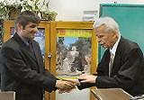IIS-Sponsored Students Complete their Studies from Saint Petersburg University
January 2007
IIS-sponsored students Umed Bulbulshoev, Shamshod Zoolshoeva, Saodatsho Matrobov and Sarkor Sarkorov successfully completed their post-graduate studies from the Faculty of Oriental Studies at Saint Petersburg University, focusing on aspects of Pamiri culture and linguistics. They have been awarded a ‘Candidate of Sciences’ which can be equated to a PhD in the western academic context. More
January 2007
IIS-sponsored students Umed Bulbulshoev, Shamshod Zoolshoeva, Saodatsho Matrobov and Sarkor Sarkorov successfully completed their post-graduate studies from the Faculty of Oriental Studies at Saint Petersburg University, focusing on aspects of Pamiri culture and linguistics. They have been awarded a ‘Candidate of Sciences’ which can be equated to a PhD in the western academic context. More
 Gateways
Gateways